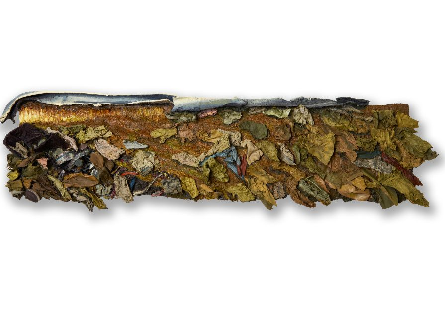

The Closing Reception of The Language We Create by Chicago Artist Coalition
The Language We Create speaks directly to the role of artists in the world of visual communication.
Throughout the diversity of their explorations, these 11 artists, all cohort residents of Chicago Artists Coalition, remain in dialogue with one another. Each work brings its own context, the clear signature of its creator – a story crafted through the artist’s uniquely defined language. These pieces, while distinct, have common threads that link them one to another.
We see a vocabulary built on textures, colors, and shapes, layered with movement and light in the same way nouns, verbs and adjectives are traditionally woven together in prose. These combinations as envisioned by the artist craft their narrative, document their reality.
Language however, is an inherently social tool used to enhance relationships, for expression and connection. While the work is its own being, it asks the viewer to bring their own interpretation to the experience, linking themselves to the piece as well.
Herman Aguirre, Skyler Simpson, Diana Noh, Carina Vargas-Nuñez, Rob Croll, Gabriel Moreno, Gunjan Chawla Kumar, Mauricio López F., Miguel Limón, Pedro Montilla, Van Payne